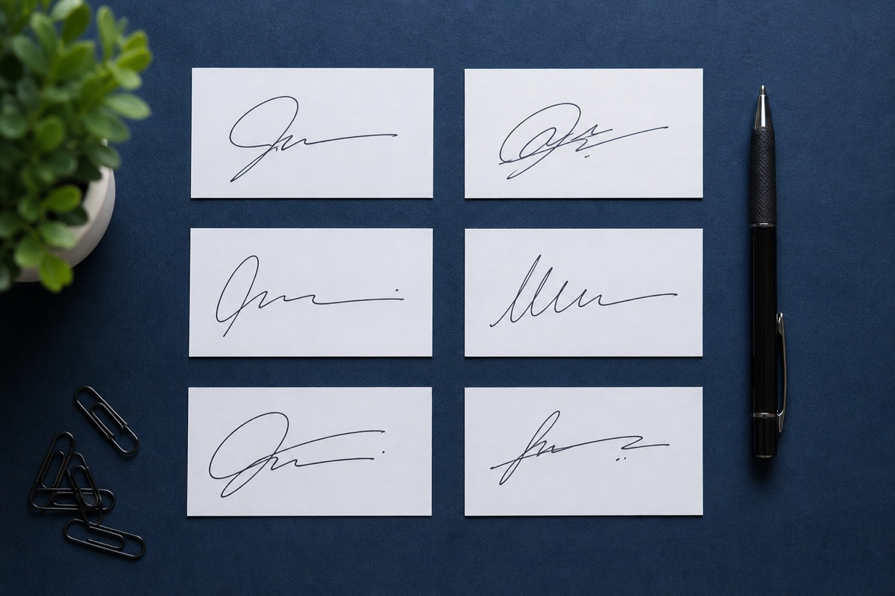

这项服务主要包含什么
模仿签名内容咨询
模仿签字样本分析
日常签名笔迹整理
数量与周期评估
先确定这次参考哪个签名版本
深圳站提供模仿签名、模仿签字和签名笔迹相关服务信息。可根据签名结构、样本数量、需要完成的数量和时间要求进行前期评估。
先确定这次参考哪个签名版本
建议提供多份清晰的自然签字样本，尽量包含不同时间和不同速度下形成的签名。照片应端正、无明显反光，并保留未经压缩的原图。
多份自然签写比单张截图更有用
签名结构复杂程度、样本质量、目标数量和时间要求是常见影响因素。材料确认后，才能给出更贴近实际情况的评估。
结构、数量和时间都会影响评估
深圳福田、罗湖、南山、盐田等主要区域均可线上提交需求和签字样本，确认内容后安排后续流程。
深圳站材料提示
正式签字和日常简写可能不是同一个版本，提交样本时要分开标注，并说明这次主要参考哪一种。在深圳站沟通时，可以把目标内容、现有样本和期望日期放在同一份说明里，减少反复补充。
深圳模仿签名常见问题
只有一张签名照片可以吗？
可以先判断清晰度，但多份自然样本更有利于了解签名的稳定结构和正常变化。
手机拍摄需要注意什么？
保持光线均匀、页面端正、笔画清晰，并保留完整页面和原始照片。
模仿签名多久可以完成？
需要结合签名难度、数量和当前时间要求评估。